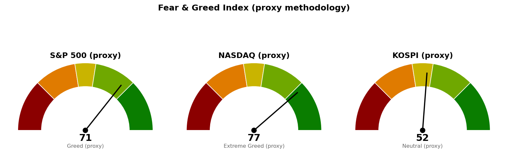

| 직전에 건 조건 | 판정 | 근거 |
|---|---|---|
| S&P 500 도착지 7,833 (고가 도달) | 충족 | 10/6 장중 고가 7,845 |
| S&P 500 기준선 7,794 (종가 상회) | 진행 중 | 10/6 장중 7,839 · 종가 미확정 |
| 나스닥 돌파 실패선 27,244 (종가 하회) | 진행 중 | 10/6 장중 27,703 · 저가 27,614 |
| 나스닥 도착지 28,068 (고가 도달) | 미충족 | 10/6 장중 고가 27,723 |
| 코스피 기준선 7,054 (종가 상회) | 미충족 | 10/6 종가 6,939 (-0.92%) · 시가·고가 7,045 |
| 코스피 다음 지지 6,830 (종가 하회) | 미충족 | 10/6 저가 6,897 |
| 세 지수 사다리 · 취소선 · 30년 금리 5.286% | 미충족 | 어느 지수도 닿지 않음 · 30년 금리 장중 5.635% |
S&P 500은 사다리 회차를 거치지 않고 상방 갈래의 도착지에 먼저 닿았습니다. 기준선 종가 판정이 남아 있지만 도착지가 충족됐으므로 새 계획으로 다시 잡았고, 바뀐 것은 둘입니다 — 도착지가 7,833에서 7,950(7,950 라운드와 일봉 1.272 확장선 7,974 구간의 하단)으로, 다음 지지가 7,596에서 7,665(50일선 7,650과 일봉 23.6% 되돌림선 7,680, 10월 1일 반응)로 올라왔습니다. 7,794는 이제 넘어야 하는 가격에서 지켜야 하는 가격으로 쓰임이 바뀌었습니다. 사다리·취소선은 같은 가격입니다. 나스닥과 코스피는 어느 쪽 갈래도 시험받지 않아 직전 계획을 그대로 유지합니다.
20일선·50일선은 지수이동평균(최근 가격에 무게를 더 둔 평균)입니다. 미국 두 지수는 10월 6일 장중(뉴욕 오전 11시 30분 무렵) 값이며 이동평균과 하루 변동폭에 이 장중 봉이 들어 있습니다. 코스피는 10월 6일 종가입니다.
기준선 7,794는 현재가에서 한 세션 안의 거리이며, 오늘 종가가 판정입니다. 기준선과 다음 지지 사이의 20일선 7,704는 라운드 7,700과만 겹쳐 받칠 근거가 얇습니다.
도착지 28,068은 하루 변동폭의 1.1배 거리입니다. 나스닥이 빠져나온 90일 박스는 안쪽 판정이 분산 우위(지지 테스트마다 매도 거래량 증가, 저점 절하)여서, 27,244를 잃고 박스 상단 26,984 아래로 되돌아오면 분산 우위로 판정된 그 박스 안으로 돌아갑니다.
코스피는 20일선(6,886)이 50일선(6,899) 아래에 있어 미국 두 지수와 순서가 반대이고, 미국 두 지수가 상방 갈래에 있는 동안 코스피는 기준선 아래에서 밀려 있습니다. 코스피 10월 7일 시가는 오늘 밤 뉴욕 종가가 먼저 정하므로 코스피 계획은 미국장 결과에 종속됩니다. 30년 금리가 5.635%로 신규 편입 조건(5.286%)과 멀어 경로를 말할 근거가 없으며, 이번에도 방향을 말하지 않고 기준선과 두 갈래만 냅니다. 세 지수 회차를 전부 집행하면 계좌의 16%(22,319,744원), 모두 취소선에서 멈추면 계좌 -0.23%(-318,663원)이며 갭으로 취소선을 건너뛰면 손실은 더 커집니다.
| 지수 | 값 | 등락 | 시가 | 고가 | 저가 |
|---|---|---|---|---|---|
| 나스닥 종합 (10/6 장중) | 27,700 | +0.81% | 27,641 | 27,723 | 27,614 |
| S&P 500 (10/6 장중) | 7,839 | +0.84% | 7,806 | 7,845 | 7,806 |
| 코스피 (10/6 종가) | 6,939 | -0.92% | 7,045 | 7,045 | 6,897 |
| 니케이 225 (10/6 종가) | 70,774 | +1.18% | 69,955 | 70,799 | 69,813 |
미국 주도섹터는 20일 기준 기술 하나이며 초과수익은 +6.57에서 +5.79로 줄었습니다. 오늘 장중에는 유틸리티(+2.38%)·부동산(+1.39%)·산업재(+1.09%)가 가장 강했고 기술은 +0.93%로 지수와 비슷합니다. 하루치 움직임이라 판정을 바꾸지 않습니다.
한국 섹터는 테마형 ETF 기준이라 미국 업종 ETF와 성격이 다릅니다. 반도체는 직전 장중 값(+20.89)보다 늘어난 +21.12로 마쳤습니다. 이번 브리핑에서는 종목 발굴을 돌리지 않았습니다.
| 항목 | 값 | 직전 대비 |
|---|---|---|
| 미국 경기선행지수 (2026년 8월) | 100.96 | 7월 100.89 대비 +0.06 · 직전과 같은 값 |
| 한국 경기선행지수 (2026년 8월) | 102.87 | 7월 102.81 대비 +0.06 · 직전과 같은 값 |
| 미 10년 명목금리 | 5.28% (10/2 확정) · 10/6 장중 지수 시세 5.260% | 확정치 새 값 없음 · 시세 10/5 5.311% 대비 -0.051%포인트 |
| 미 10년 기대물가 | 2.36% (10/5) | 직전과 같음 |
| 미 10년 실질금리 | 2.92% (10/2) | 새 값 없음 |
| 유가 (WTI) | 확정치 96.16달러 (9/29) · 선물 88.09달러 (10/6 장중) | 확정치 새 값 없음 · 선물 10/5 89.43달러 대비 -1.50% |
| 달러지수 (광의) | 121.38 (10/2) | 새 값 없음 |
| 변동성지수 (VIX) | 15.34 (10/6 장중) | 10/5 15.52 대비 -1.16% · 백분위 33.8 (직전 36.7) |
경기선행지수는 장기 평균을 100으로 놓고 경기 방향을 몇 달 앞서 보여주는 지표(OECD 작성)이며, 새 발표가 없어 해석도 직전과 같습니다. 공식 일별 시계열은 새 값이 없어 실질금리와 달러·금·장기채의 일치 여부는 이번에 판정하지 않았습니다. 오늘 장중 10년 금리는 -0.051%포인트, 30년 금리는 5.665%에서 5.635%로 내려 금리 부담이 하루 줄었고, 그 사이 유가 선물은 -1.50%인데 기대물가는 2.36%에 머물러 있습니다.
1. 9월 FOMC 의사록 내일 공개 (MarketWatch) 실질 정책금리가 예상보다 낮아진 상태에서 의사록이 추가 인상 단서를 줄 수 있다는 기사입니다. 30년 금리가 5.6%대에 머무는 한 신규 종목 편입 조건(5.286%)이 풀리지 않으므로, 의사록 뒤 금리 반응이 그 조건과의 거리를 바꾸는 사건입니다. 공개일은 기사 기준이며 경제지표 일정 조회에는 없습니다.
2. 미국 소프트웨어주가 2026년 고점 경신, AI 대체 우려 완화 (Reuters) 기술(XLK)이 20일 기준 유일하게 지수를 이기는 업종이라는 판정과 같은 방향입니다. 다만 기술의 초과수익은 +6.57에서 +5.79로 줄었고, 오늘 S&P 500이 도착지에 닿은 날 유틸리티·산업재가 기술보다 더 올랐습니다.
3. 구글, 컨스텔레이션과 원전 전력 계약 (MarketWatch) 오늘 장중 가장 강한 업종이 유틸리티(+2.38%)인 이유로 읽힙니다. 유틸리티는 20일 초과수익이 -7.95로 여전히 하위권이라 하루치 반등으로는 주도섹터 판정을 바꾸지 않습니다.
230건을 받아 10건을 추렸고, 나머지 7건은 예측시장·방산 계약·영국 물가·독일 은행 인사·종목 칼럼 등 지수 기준선 판단과 관계가 약해 뺐습니다.

세 점수 모두 공식 CNN Fear & Greed 지수가 아니라 모멘텀·상대강도·변동성·안전자산 선호 네 항목으로 계산한 대용 지표입니다. 변동성 항목은 자기 과거 3년 분포에서의 자리로 산출하며, 미국은 변동성지수 15.3이 백분위 33.8(754일), 코스피는 내재변동성 지수가 없어 20일 실현변동성 연율화 28.8%가 백분위 67.8(708일)입니다. 네 항목은 나스닥 72.7 · 69.1 · 66.2 · 100.0, S&P 500 65.6 · 63.6 · 66.2 · 89.4, 코스피 45.5 · 54.8 · 32.2 · 78.9입니다. 미국 두 점수는 장중 값입니다.
| 날짜 (한국시간) | 이벤트 | 확인할 것 |
|---|---|---|
| 10월 7일 05:00 | 뉴욕 마감 (미국 10/6) | S&P 500 7,794 종가 위(돌파 확정)인지 · 나스닥 27,244 위 유지 · 30년 금리 종가 |
| 10월 7일 15:30 | 코스피 마감 | 7,054 종가 회복 · 6,830 위 유지 |
| 10월 7일 (미국) | 9월 FOMC 의사록 (기사 기준) | 금리 반응 · 30년 금리 5.286%와의 거리 |
| 10월 8일 · 15일 · 22일 · 29일 (미국) | 신규 실업수당 청구 | 고용 부진이 이어지는지 |
| 10월 14일 (미국) | CPI | 물가 지표와 금리 |
| 10월 28일 (미국) | FOMC | 금리 결정 |
| 10월 29일 (미국) | PCE 물가 · GDP | 물가와 성장 |
장부 보유 16종목, 매도 기록 없음(직전과 같음). 계좌 평가액 139,498,400원(9월 21일 등록값). 국면은 S&P 500 7,774가 200일 이동평균 7,231 대비 +7.51%(10/5 종가, 10/6 봉은 장이 끝나지 않아 제외), 코스피 6,939가 6,339 대비 +9.47%(10/6 종가)로 두 시장 모두 신규 진입이 가능한 국면입니다.
1. 매수 쪽 — 지금 가격에 살 자리는 세 지수 모두 없습니다. S&P 500 7,839와 나스닥 27,703은 52주 고점 대비 -0.1% 안쪽이라 추격 매수하지 않습니다. 다음 회차는 나스닥 1차 26,680 · S&P 500 2차 7,578 · 코스피 1차 6,673의 장중 터치입니다. S&P 500 1차 7,653은 9월 30일에 닿았는데 장부에 매수 기록이 없습니다. 매수했으면 수량·단가·날짜를 알려 주십시오. 2. S&P 500은 오늘 일봉 종가로 판정하십시오 — 7,794 위면 돌파 확정이며 도착지 7,950을 봅니다. 7,794 아래면 돌파 실패로 보고 다음 지지 7,665와 사다리 1차 7,653을 봅니다. 3. 나스닥이 일봉 종가로 27,244 아래에서 마치면 돌파 실패로 보고 다음 지지 26,992와 사다리 1차 26,680을 봅니다. 장중 이탈로는 판정하지 않습니다. 4. TQQQ (TQQQ) 50주는 별도 종목 리포트의 기준 가격으로 판정되며 이 브리핑의 나스닥 계획과 무관합니다(10/2 목표 도달 신호 1회, 직전과 같음). 5. 신규 종목 편입은 30년 금리가 종가로 5.286% 아래일 때 재개합니다(10/6 장중 5.635%). 6. 미집행 매도 신호는 직전과 같습니다 — USA Rare Earth (USAR) 8회 · Netflix (NFLX) 5회 · GE Vernova (GEV) 3회 · AMD (AMD) · Alibaba (BABA) · 현대해상 (001450.KS) · 한화손해보험 (000370.KS) 각 2회 · MP Materials (MP) · TQQQ 각 1회, 장기 보유로 둔 Fluence Energy (FLNC) 6회 · LightPath (LPTH) 2회는 기록만 쌓입니다. 매도했으면 수량·단가·날짜를 알려 주십시오. 사실을 적을 뿐 매도를 권하는 것이 아닙니다.
다음 세션에 볼 것 하나 — 10월 7일 05:00 S&P 500 종가가 7,794 위인지입니다.
ATR(하루 평균 변동폭): 최근 14일 동안 하루에 오르내린 폭의 평균. · EMA(지수이동평균): 최근 가격에 더 무게를 준 평균 가격선이며 20일선·50일선은 이 방식입니다. · RSI(상대강도지수): 최근 14일 오른 폭과 내린 폭의 비율을 0~100으로 나타낸 값. · 확장선: 직전 상승 폭을 위로 연장해 계산한 가격. · 20일 초과수익: 최근 20거래일 수익률에서 기준 지수 수익률을 뺀 값. · VIX(변동성지수): S&P 500 옵션에 반영된 향후 30일 예상 변동폭. · FOMC: 미국 연준의 금리 결정 회의. · CPI: 소비자물가지수. · PCE: 개인소비지출 물가지수. · 기대물가: 명목금리와 물가연동채 금리의 차이로 시장이 보는 평균 물가상승률. · 실질금리: 물가연동국채가 직접 주는 금리.
이 문서는 참고 정보이며 투자자문이 아닙니다. 투자 판단과 그 결과에 대한 책임은 투자자 본인에게 있습니다.